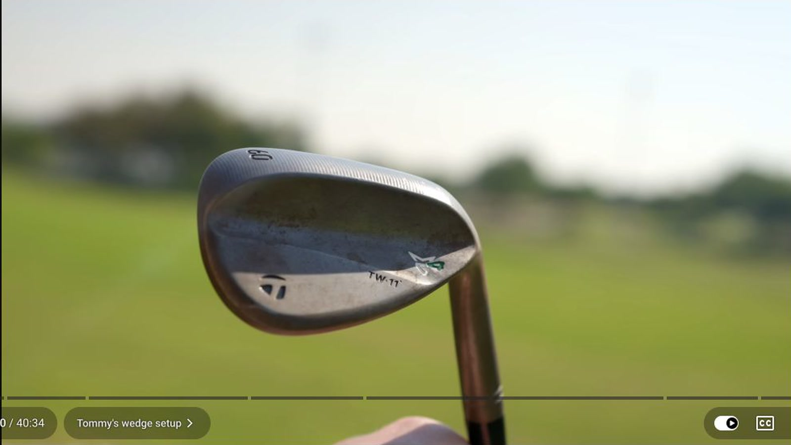
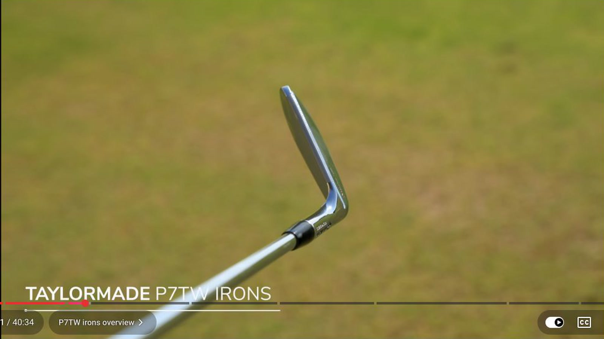
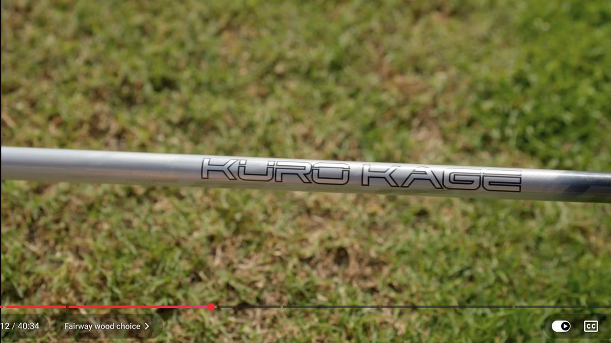
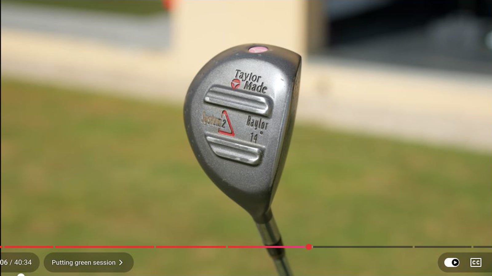
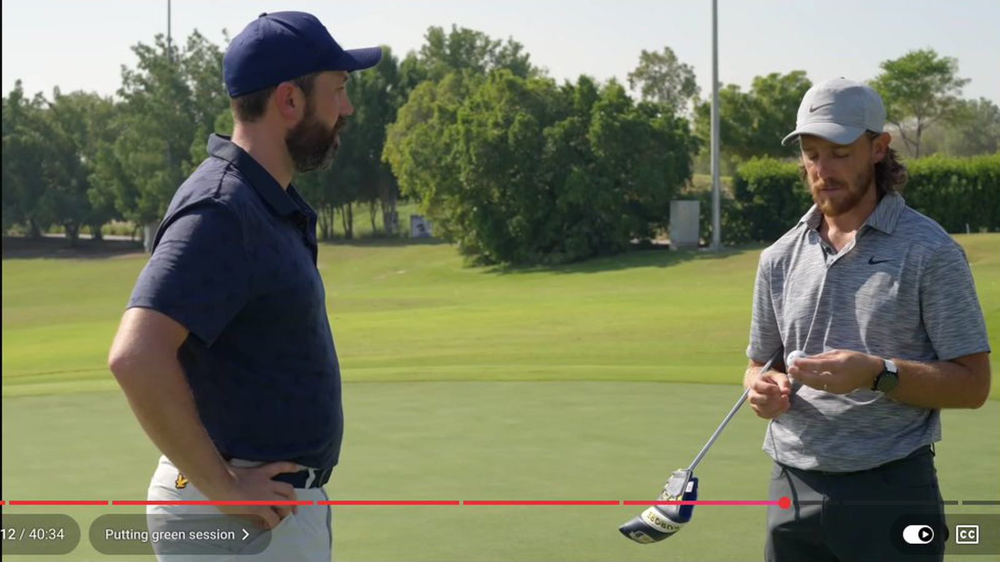
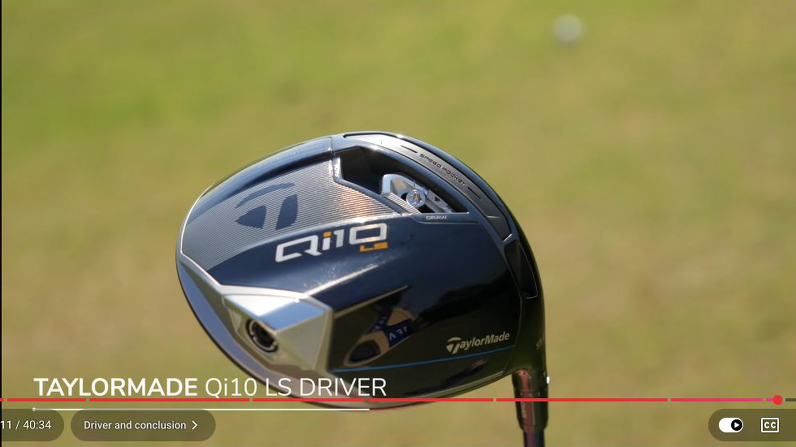

Executive summary
Fleetwood gives more bag space to long approaches than short wedges
Fleetwood once carried four wedges. As championship courses became longer, he began facing more second shots between roughly 230 and 250 yards. Taking distance off a 5-wood left him in an awkward middle ground, so he removed one wedge and added another long-club option.
The resulting structure has a pitching wedge, 52°, and 60° at the bottom. At the top, it carries driver, mini driver, 5-wood, and 3-iron. The gaps look unusual if viewed only as lofts. They become coherent when viewed as shot types: full and partial wedge ladders, a workable 5-wood, a reliable mini-driver draw, and a low-spin driver for maximum distance.
Familiarity runs through the whole bag. P7TW irons resemble the Nike VR Pro blades he trusted during his return to form. Project X 6.5 shafts and open grip alignment preserve his address picture. A worn Odyssey putter stays because its shape and topline have survived years of practice. New technology is accepted only when it fits an existing visual and movement pattern.
Source boundary. This is a January 2024 walkthrough recorded while some equipment was new or still being evaluated. It should not be read as Fleetwood's current bag. Launch-monitor numbers come from the filmed session and reflect that day's swing, environment, and device settings.
Bag map
Every slot has a distance and a flight assignment
| Club | Visible specification | Primary assignment | Session evidence |
|---|---|---|---|
| Driver | TaylorMade Qi10 LS, 9°, Ventus 6X, upright setting | Maximum tee distance with a more stable off-center response | 294-yard carry on the filmed swing |
| Mini driver | TaylorMade BRNR, 13.5° set lower, Ventus 6X Velocore | Predictable draw and controlled tee placement | 274-yard carry on the better strike |
| 5-wood | TaylorMade Stealth 2, bonded 18°, Kuro Kage TX | Long approaches, shape changes, and downwind control | 248-yard carry and 247-yard high fade |
| 3–PW | TaylorMade P7TW, Project X 6.5 | Known windows and a blade shape close to his old Nike irons | 7-iron demonstration carried 185 yards with about 6,500 rpm |
| 52° | High-toe head, Dynamic Gold S400 | Full, smooth, and clock-position distance ladder | Hands-to-middle shot finished around 95 m, roughly 104 yd |
| 60° | MG4 options including a TW-grind head built to his specification | Default aerial option when ground pace introduces risk | Used for a delicate shot near 30 yards |
| Putter | Odyssey White Hot Pro #3 style, topline, long-used grip | Distance control and a familiar face/neck picture | Development focus is converting more putts from 5–15 ft |
| Ball | TaylorMade TP5x Pix, number 19 | Alignment, roll feedback, and a simple visual focus point | Wide Pix band and black triangle support different routines |
The specifications above are limited to what Fleetwood and Shiels identify on camera. Length, swing weight, and several exact loft-and-lie values are not supplied. The useful information is the assignment of each club, because that reveals why the bag has this shape.
Wedge strategy
More loft is the safe default, but one sole must work everywhere
When Fleetwood is split between two short-game options, he tends to choose more loft. His reasoning is practical: once the ball is moving on the ground, pace and contours can carry it away. A higher shot reduces that early ground interaction. He still likes bump-and-runs and is comfortable putting from off the green, but doubt pushes him toward the lofted option.
He also resists changing wedge grind with every turf condition. Grainy Bermuda can justify more bounce, yet he prefers a universal sole and learns to alter delivery around it. Constancy matters because the short game already asks for many face positions, speeds, and landing points.
The 60° options include two MG4 heads and a Tiger Woods grind that Fleetwood saw during a TaylorMade shoot. He asked the equipment team to build that head to his own specifications. The sole has several relieved areas and a leading-edge treatment that creates more ways to present the face.

Distance control
Three lofts are enough because each wedge contains several swings
The bottom of the bag contains pitching wedge, 52°, and 60°. Fleetwood maps each wedge through several motion lengths: full, smooth, hands-to-shoulders, hands-to-middle, and shorter feel shots. A 52° hands-to-middle swing is about 105 yards in his normal reference system.
During the filming, the launch monitor was briefly read as yards when it was displaying metres. The shot shown at 95 m converts to roughly 104 yards, which matches Fleetwood's expectation. That moment is a useful reminder to verify units before treating a launch-monitor number as a technical finding.
Fleetwood previously carried 60°, 56°, 52°, and pitching wedge. The four-wedge system helped when he was developing his chipping, but longer courses created more frequent decisions around 230 to 250 yards. Removing the 56° made room for a 3-iron or another long option. He accepted a larger nominal wedge gap because he could manufacture the missing distances with motion length and flight.
Iron continuity
The P7TW shape replaced Nike without changing his visual reference
Fleetwood stayed with Nike VR Pro irons after Nike stopped making equipment because his game was improving and he did not want to disturb the process. The P7TW shape later gave him the closest replacement he had seen. He even put an early set into tournament play before Tiger Woods had used the model in competition.
The set runs from 3-iron through pitching wedge with Project X 6.5 shafts. Iomic grips appear on the irons, while the woods and wedges use BCT cord. The wedge shafts are Dynamic Gold S400, softer and a little lighter than the iron shafts, which gives him more response through scoring swings.
One less obvious detail is grip orientation. The iron grips are installed slightly open, around the 11:30 position on an imagined clock face. Someone once assumed they had been installed incorrectly. For Fleetwood, the orientation matches the way he presents the head behind the ball.

The only fairway wood
A bonded 18° 5-wood covers stock, draw, and high-fade windows
The Stealth 2 5-wood is a bonded 18° head with a Kuro Kage TX shaft. Fleetwood expects roughly 250 to 260 yards of carry in normal conditions and grips down even though the club already appears short. The shorter presentation does not cost enough distance to matter and gives him more control.
Its value comes from workability. Fleetwood can hit a hard draw, hold the face for a fade, or lower the flight slightly. He does not expect a 5-wood to become a true low-flight club, but downwind it can launch high, carry far, and avoid running excessively after landing.
In tournaments, Fleetwood describes himself as a consistent drawer and uses that shot about 95 percent of the time unless the hole forces another shape. During the demonstration he produces a high fade carrying 247 yards. The club therefore protects his default while still covering a less natural requirement.

The 3-wood replacement
The mini driver turns one dependable curve into a tee-shot system
Fleetwood's old 3-wood had a narrow purpose. It was a fast club for reaching a par five from around 290 yards, not a fairway finder. When he saw Fred Couples using the BRNR Mini Driver at the Masters, he tested one the following week at Harbour Town, where tight corridors make start line especially important.
The BRNR is 13.5° adjusted slightly lower, with a Ventus 6X Velocore shaft. Fleetwood tees it relatively low and thinks of it more like a 3-wood than a small driver. The stock pattern starts to the right and draws back. That repeatable curve makes it a reliable choice when the full driver feels uncomfortable.
The club also acts as a swing constraint. Fleetwood's driver tendency is to fall behind and send the path left. To start the mini driver up the right side, he must stay over the shot and push through impact. That movement often helps the driver swing that follows.
A useful old club
A tiny 14° TaylorMade wood exposes rhythm and strike
One club is not a tournament selection. Fleetwood found an old TaylorMade fairway wood in a donated academy set, fitted with a regular-flex steel shaft and marked at 14°. He put it in the bag because he enjoys older equipment and because the club makes a useful practice tool.
The small head sharpens strike awareness. The softer steel shaft discourages a violent transition and asks the player to control rhythm. After hitting it, a modern head appears much larger and easier to find. Fleetwood still carries the old club roughly 243 yards in the demonstration.

Ball and putting system
The visual tools reduce alignment pressure rather than demand perfection
Fleetwood uses a TP5x Pix number 19. The number relates to his birthday, 19/1/91, though he jokes that number 19 has not made roulette profitable. The Pix pattern gives him several alignment choices. He can use the full wide band, the TaylorMade logo, or a smaller element instead of trying to place one thin line perfectly.
The design also supplies roll feedback. For longer putts and tee shots, a solid black triangle can become the last visual focus point before the stroke. In team events, he can return to a plain white ball without changing mechanics because the Pix is a preferred aid rather than a dependency.
The Odyssey White Hot Pro head dates back to 2016. Fleetwood first used a version with a backline and added a dot by hand, accidentally placing it toward the heel. The current version keeps the same basic shape with a topline. Wear on the sole and grip comes from use rather than deliberate aging.
He considers himself a strong long putter and a good finisher around the hole. The opportunity lies between about 5 and 15 feet, where a small increase in conversion can create large scoring gains. He uses AimPoint and works with caddie Ian Finnis, whose feet provide a second read.

The new driver
Qi10 LS adds off-center stability without changing the low-spin assignment
The driver is a 9° TaylorMade Qi10 LS with a Ventus 6X shaft. Fleetwood shows it in an upright setting, which can help keep the starting direction from moving too far right. He marks the back of the grip so the team can identify his gamer among the two or three drivers carried during travel.
Fleetwood credits the previous Stealth 2 with improving his driving consistency, especially on strikes higher on the face. The Qi10 family discussion centers on reducing how much the head opens on a toe strike. Because this is a product conversation between a TaylorMade player and an equipment reviewer, the forgiveness claims should be treated as their reported testing rather than an independent comparison.
The LS remains the low-spin member of the family. Fleetwood carries the filmed drive 294 yards. The point is not that every player should choose the LS. His bag gives the full driver a distinct job: maximum distance and a more neutral curve, while the mini driver supplies the reliable right-starting draw.

What to borrow
Build your bag around recurring decisions
- Count the shots you actually face. Fleetwood changed the bag when 230-to-250-yard approaches appeared more often. Your course may demand another wedge, hybrid, or tee club instead.
- Give overlapping clubs different flights. Distance alone does not define a gap. Start line, peak height, curve, landing angle, and common lie can justify two nearby carries.
- Create wedge distances through motion length. Fewer lofts require a rehearsed ladder of full, smooth, and partial swings. Measure the results rather than assuming equal yardage gaps.
- Keep a trusted visual reference. Head shape, grip orientation, topline, and shaft feel can protect setup consistency while one component changes.
- Use a specialty club to constrain a miss. Fleetwood's mini driver rewards the movement he wants and discourages the driver pattern he is trying to avoid.
- Separate training tools from competition tools. The old TaylorMade wood, Plane Perfector, yoga block, and practice GPS solve learning problems. They do not all need a place in the 14-club tournament set.
My take
The best detail is the trade Fleetwood is willing to make
A WITB can become a list of products, shafts, and lofts. Fleetwood's explanation is more useful because he names what he gave up. The 56° wedge disappeared so that he could stop improvising long approaches from the wrong side of a 5-wood. The old 3-wood disappeared because it offered speed without a dependable fairway-finding role.
Those trades make the bag legible. Three wedge lofts are acceptable because he owns several motion lengths. The mini driver is acceptable because it covers a predictable tee shape and helps his full-driver movement. The worn putter is acceptable because its learned picture matters more than novelty. The bag is optimized around decisions he expects to make under pressure, not around filling every textbook loft interval.
Source and method
What this article is based on
- Rick Shiels Golf · Inside Tommy Fleetwood's Golf Bag with Rick Shiels!. Primary transcript and visual source.
Method: 1,058 public English-caption rows were reviewed across the full 40:34 video. Seven direct frames were captured at 1600x900. Specifications are limited to what is stated or visibly identified in the January 2024 walkthrough. The article does not merge this bag with Fleetwood's later 2025 setup.